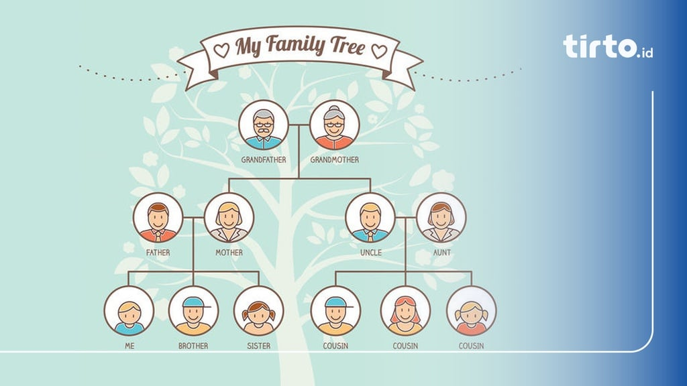

Galeri
Berikut adalah beberapa gambar lucu tentang kebotakan:
Tree adalah tipe struktur data yang sifatnya non-linier dan berbentuk hierarki.
• Non-linier = Data tidak tersusun dalam satu baris berurutan. • Hierarki = Data memiliki tingkatan, dengan satu elemen utama di atas (root) dan elemen-elemen lainnya bercabang ke bawah (node).
Struktur data tree terdiri atas simpul (node) yang menyimpan nilai dan memiliki rujukan ke simpul anak (child node). Setiap node dihubungkan oleh garis (edge)
| Istilah | Pengertian |
|---|---|
| Node | Node atau simpul adalah entitas pada struktur data tree yang mengandung sebuah nilai dan pointer yang menunjuk simpul di bawahnya (child node). |
| Child node | Child node atau simpul anak adalah simpul turunan dari simpul di atasnya. |
| Leaf Node | Leaf node atau simpul daun adalah simpul yang tidak memiliki child node dan merupakan node yang paling bawah dalam struktur data tree |
| Root | Root atau akar adalah simpul teratas dari sebuah tree. |
| Internal node | Internal node adalah istilah untuk menyebut simpul yang memiliki minimal satu child node. |
| Edge | Edge merujuk pada garis yang menghubungkan antara dua buah simpul dalam tree. |
| Subtree | Subtree adalah setiap simpul dari tree beserta turunannya. |
| Height of Node | Height of node adalah jumlah edge dari sebuah node ke leaf node yang paling dalam. |
| Depth of Node | Depth of node adalah banyaknya edge dari root ke sebuah node. |
| Height of Tree | Height of tree dapat diartikan sebagai panjang jalur terpanjang dari simpul akar ke simpul daun dari sebuah tree. |
| Degree of Node | Jumlah cabang yang melekat pada simpul disebut Degree of node atau derajat simpul. Derajat simpul pada sebuah leaf node adalah 0. |
| Degree of Tree | Derajat maksimum simpul di antara semua simpul pada tree disebut Degree of tree. |
| Jenis Tree | Pengertian |
|---|---|
| General Tree | Struktur data tree yang tidak memiliki batasan jumlah node pada hierarki tree disebut General tree. Setiap simpul atau node bebas memiliki berapapun child node. |
| Binary Tree | Binary tree adalah jenis tree yang simpulnya hanya dapat memiliki paling banyak 2 simpul anak (child node). Kedua simpul tersebut biasa disebut simpul kiri (left node) dan simpul kanan (right node). Tree tipe ini lebih populer daripada jenis lainnya. |
| Balanced Tree | Apabila tinggi dari subtree sebelah kiri dan subtree sebelah kanan sama atau kalaupun berbeda hanya berbeda 1, maka disebut sebagai balanced tree. |
| Binary Search Tree | Sesuai dengan namanya, Binary search tree digunakan untuk berbagai algoritma pencarian dan pengurutan. Contohnya seperti AVL tree dan Red-black tree. Struktur data tree jenis ini memiliki nilai pada simpul sebelah kiri lebih kecil daripada induknya. Sedangkan nilai simpul sebelah kanan lebih besar dari induknya. |
Silsilah keluarga dapat direpresentasikan menggunakan struktur data tree, di mana setiap node mewakili individu dalam keluarga. Berikut adalah beberapa penerapan dari struktur tree dalam konteks silsilah keluarga:
Selain itu, struktur tree juga sering digunakan dalam navigasi website:
Ini adalah teman kami yang botak. Dia sangat bangga dengan kepalanya yang bersih dan mengkilap!
Berikut adalah beberapa gambar lucu tentang kebotakan:
Siap untuk menguji pengetahuanmu tentang kebotakan? Ayo kita mulai!
Apakah kamu tahu? Kebotakan bisa membuat seseorang lebih mudah dikenali!
Berikut adalah gambar lucu tentang kebotakan:
"Kepala botak adalah tanda kecerdasan yang tinggi!"